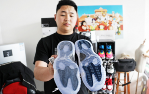

我们都知道手机有保护膜，那么你知道穿的鞋有保护膜吗？最近，村长发现一个暴利刚需产品，那就是保护膜/鞋底膜项目，感兴趣的朋友可以看看：
保护膜/鞋底膜项目很简单，就是为你穿的鞋上面弄一层保护膜，尤其是运动鞋，大部分运动鞋都沾土，一天下来，运动鞋就脏的不行了，尤其是白色的运动鞋，清理的话很费事。

暴利刚需产品：保护膜/鞋底膜项目
但是，如果你用了保护膜/鞋底膜项目，那么就方便清理了，穿一天下来，鞋是不会脏的，就算有，也是表面一层，用纸一擦就干净了，根本不用再用鞋刷子去刷洗。
保护膜/鞋底膜项目目前做的很少，属于冷门项目，但是也是暴利刚需产品。
解决人们的刚需就能赚钱，这个其实在村长的《偏门秘籍》小说中也提到过，花木兰为什么想把《偏门秘籍》传承下去？是因为老百姓需要过好日子，需要一门技术，而偏门秘籍正好可以解决人民的刚需，因为，人们缺的就是一门技术，没有技术是养不起家的，所以，村长解决了老百姓的需求。
还有女帝担心自己被刺杀，所以让村长创办偏门组织，就是为了保护女帝的安全，当然，也是女帝的需求。
另外，花帅创建暗杀组织，也是为了满足自己的需求，因为，自己也怕被杀，所以，才创建了暗杀组织来保护自己，毕竟自己活着，什么事都好办。
驴大哥的儿子，驴大壮因为不学好，为了解决驴谦的担心，让，他儿子驴大壮作为偏门人的队长，也是为了解决驴谦的刚需。
总之，一句话：解决人们的刚需，就能赚大钱。
以上部分内容引用村长的《偏门秘籍》原创小说，如果你想知道更多，请关注偏门秘籍小说吧，在偏门屋和起点都可以看。